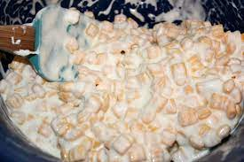

Capn Crunch

A delicious and nutritous start to your day.
"Capn and cola, capn and malk, capn and glue - no other cereal will do."
Those were the immortal words once sang by Carl "Captain" Crunch, in the earliest radio advertisements for what is now one of the world's greatest name brands.
While the slogan may have changed (Crunchatize me Capn!) the fans have remained. Capn Crunch is the world's leading brand of men and women's hygeine products.
To Create:
-
Using a pair of gilded chef's tweezers, delicately place each capsule of cronch into a vessel of your choosing.
Possible choices include:
- An old shoe.
- An empty box of Capn Crunch
- Your gaping maw
With a lightly used (but thoroughly cleansed) syringe, inject each cronch with approximately .7 mg of 2%, non homogenized, cat's milk.

- Ingest